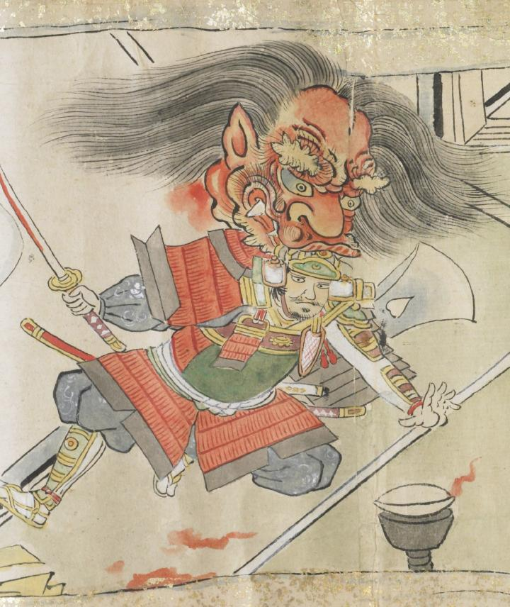

源頼光の頭に食らいつく酒天童子の首。赤い顔で、いかめしい表情をし、鋭い牙をむき出しにしている。黒い髪を左右に分け、首あたりから血を流している。
出典：親書誌：U426_nichibunken_0079：酒天童子絵巻；シュテンドウジエマキ／日付：2006／資源識別子：U426_nichibunken_0079_0011_0000
Copyright (c)2010- International Research Center for Japanese Studies, Kyoto, Japan. All rights reserved.